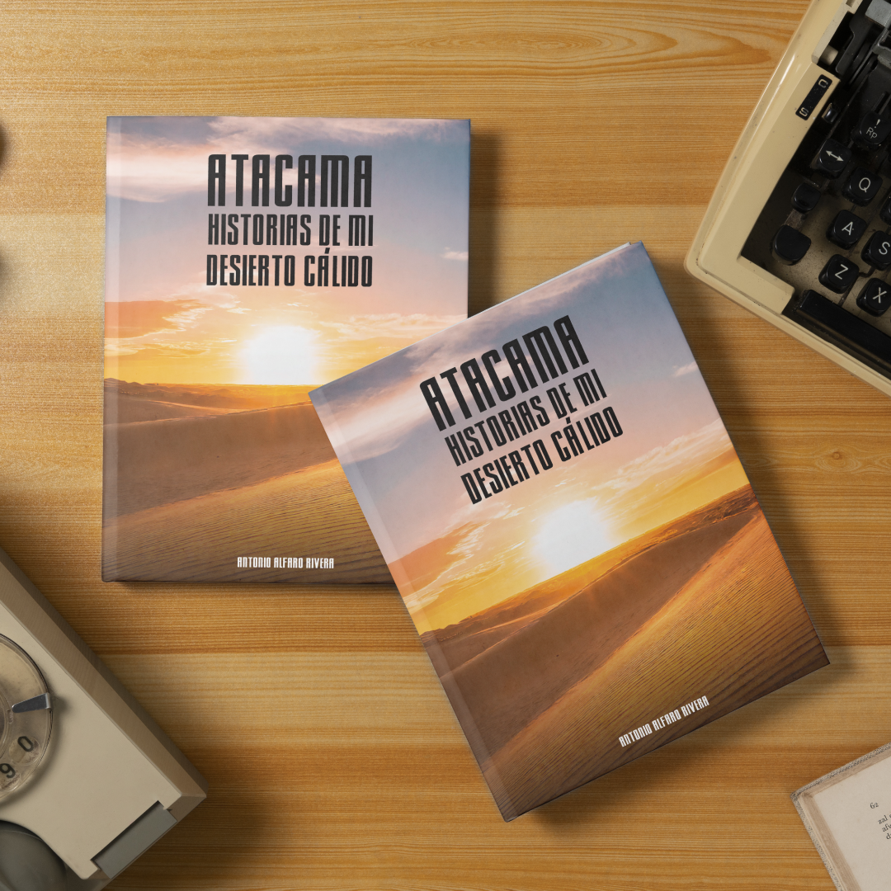
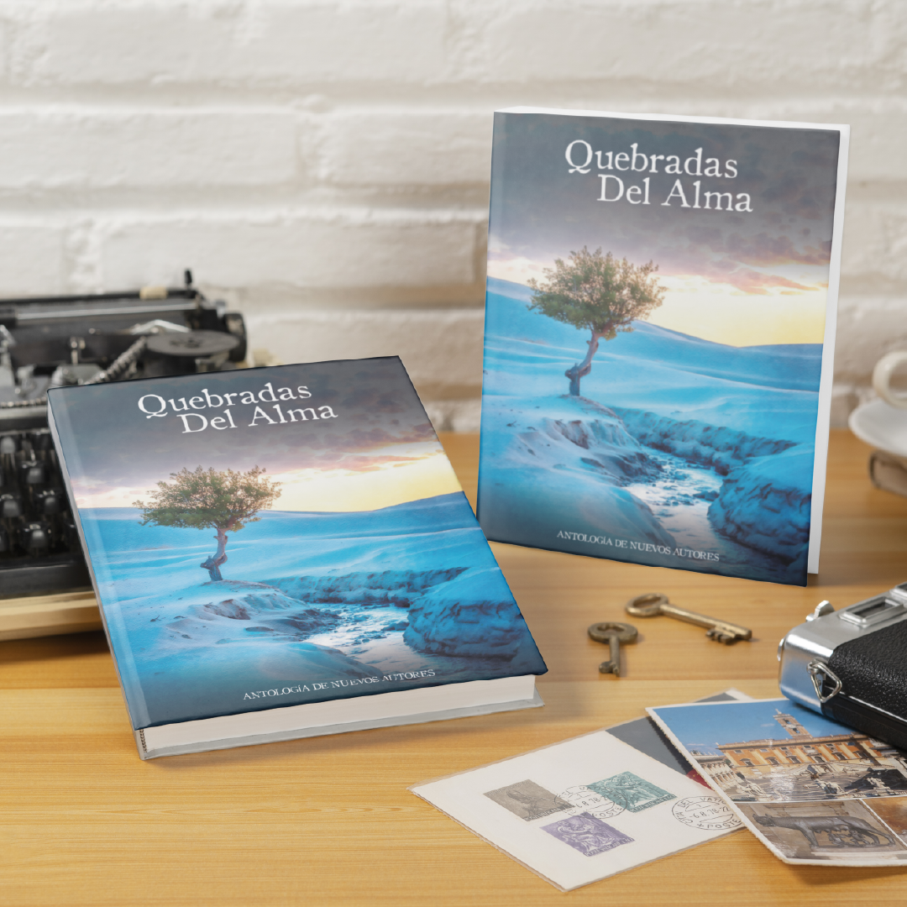

|  |
Atacama Historias de mi desierto calidoMás que un paisaje árido, el Desierto de Atacama es el escenario de historias profundas y vibrantes. "Atacama: Historias de mi Desierto Cálido" nos sumerge en relatos donde la cordillera, la costa y la arena infinita son testigos de amores, obsesiones, tragedias y esperanzas. Precio internet: $15.990 |
Una voz que clama en el desiertoNo solo el calor y la arena definen un desierto. "Una Voz que Clama en el Desierto" es un poemario sobre la soledad en todas sus formas: la del inmigrante en una ciudad desconocida, la del individuo perdido en la multitud, la del alma que busca sentido en un mundo ajeno. Precio internet: $15.990 |
|  |
Quebradas del almaMás allá del desierto de Atacama, hay quebradas en la piel y en el alma. "Quebradas del Alma" es una antología donde poemas, cuentos y obras de teatro retratan la lucha contra el destino, el dolor de los cambios y la esperanza de un nuevo comienzo. Precio internet: $15.990 |